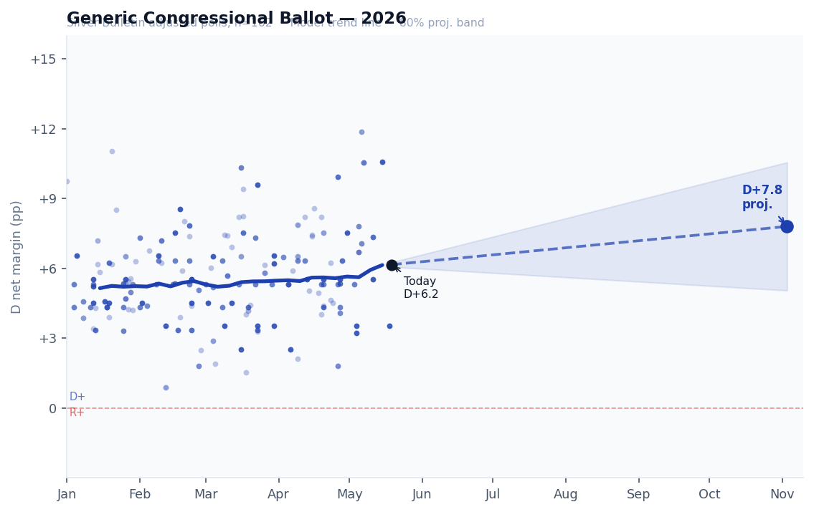

🗳
2026 Senate Model
· v1 · Card 2 of 2
May 19, 2026 · 168 days to Election Day
Generic Congressional Ballot — 2026 Tracker
Silver Bulletin adjusted polls (n=162) with model trend · OOP projection: D+7.8 by Election Day

Demographic Shifts vs 2024
Change in D vote share by group · 2024 Catalist baseline → 2026 polls